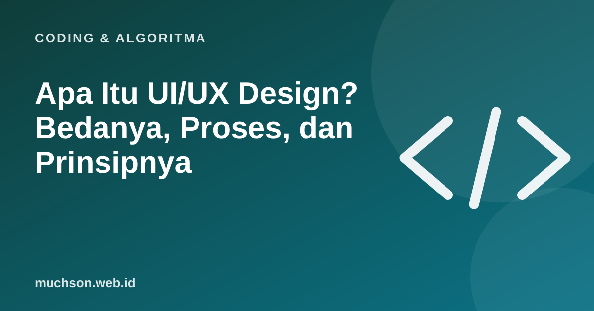

Beranda › Artikel › Coding & Algoritma
Coding & AlgoritmaApa Itu UI/UX Design? Bedanya, Proses, dan Prinsipnya
Pernah memakai aplikasi yang tampilannya cantik tetapi membingungkan? Atau aplikasi sederhana yang terasa sangat mudah? Itulah beda UI dan UX. Profesi UI/UX designer kini banyak dicari, tetapi istilahnya sering disalahpahami. Artikel ini menjelaskan keduanya dan cara memulai.

UI dan UX: beda yang sederhana
Analogi: UX adalah denah rumah yang memastikan dapur dekat ruang makan dan kamar mandi mudah dicapai. UI adalah cat, lampu, dan perabotnya. Rumah yang cantik dengan denah buruk tetap tidak nyaman ditinggali.
Proses kerja UX
Dalam usability testing, Anda meminta beberapa pengguna menyelesaikan tugas nyata (misalnya membeli tiket) sambil mengamati di mana mereka bingung. Nielsen Norman Group, lembaga riset UX terkemuka, terkenal dengan temuan bahwa menguji dengan sekitar lima pengguna sudah bisa mengungkap sebagian besar masalah usability yang umum dalam satu putaran pengujian kualitatif.
10 heuristik usability Jakob Nielsen
Heuristik ini dipakai luas untuk menilai antarmuka. Coba nilai aplikasi yang sering Anda pakai:
| No | Heuristik | Contoh |
|---|---|---|
| 1 | Tampilkan status sistem | Indikator "mengunggah 60%" |
| 2 | Cocok dengan dunia nyata | Ikon keranjang untuk belanja, istilah yang dipahami pengguna |
| 3 | Kendali dan kebebasan pengguna | Tombol batal dan undo |
| 4 | Konsistensi dan standar | Tombol utama selalu warna dan posisi sama |
| 5 | Cegah kesalahan | Konfirmasi sebelum menghapus |
| 6 | Kenali, jangan mengingat | Riwayat pencarian terlihat |
| 7 | Fleksibel dan efisien | Pintasan untuk pengguna mahir |
| 8 | Estetis dan minimalis | Hanya informasi yang relevan |
| 9 | Bantu mengenali dan memulihkan kesalahan | "Format email salah, contoh: nama@contoh.id" |
| 10 | Bantuan dan dokumentasi | Panduan singkat yang mudah dicari |
Aksesibilitas: bagian dari UX yang baik
Desain yang baik bisa dipakai sebanyak mungkin orang, termasuk penyandang disabilitas, pengguna lansia, atau orang yang memakai HP di bawah terik matahari. Pedoman WCAG dari W3C, misalnya, menyarankan kontras teks normal minimal 4,5:1.
Alat yang dipakai
| Kebutuhan | Alat umum |
|---|---|
| Desain dan prototipe | Figma (paling umum), Penpot (open source) |
| Riset dan catatan | Formulir survei, dokumen wawancara, papan kolaborasi |
| Uji usability | Prototipe yang bisa diklik + rekaman layar dengan izin peserta |
Cara mulai belajar
- Pelajari prinsip dasar: hierarki visual, tipografi, warna, jarak, dan heuristik usability.
- Kuasai satu alat desain, misalnya Figma.
- Desain ulang aplikasi yang Anda anggap membingungkan, lalu tulis alasannya.
- Lakukan uji kecil dengan 3-5 orang dan perbaiki desain berdasarkan temuan.
- Kumpulkan 2-3 studi kasus lengkap (masalah, proses, hasil) di portofolio.
Tanya jawab
Apa beda UI dan UX?
Apakah UI/UX designer harus bisa coding?
Alat apa untuk belajar UI/UX?
Apa itu heuristik usability?
Sumber dan bacaan lanjut
- Nielsen Norman Group: 10 Usability Heuristics for User Interface Design
- Nielsen Norman Group: Why You Only Need to Test with 5 Users
- W3C: Web Content Accessibility Guidelines (WCAG) Overview
- Desain aksesibel untuk pembelajaran digital (artikel terkait)